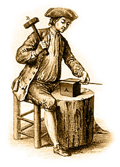

The Ferrous Metallurgy of Early Clocks and Watches: Studies in Post Medieval SteelReference: The Ferrous Metallurgy of Early Clocks and Watches: Studies in Post Medieval Steel, edited by M.L. Wayman, British Museum Occasional Paper 136, ISBN 086159 136 4, £ 22.50, August 2000. From the 16th to the 19th centuries there were remarkable changes in man's scientific and technical knowledge, and this is nowhere better exemplified than in ferrous metallurgy. In the 16th century the nature of steel was unknown and its manufacture was necessarily a hit or miss affair. By the 19th century liquid steel of high purity and exact composition was being regularly prepared. This book charts the progress from medieval to scientific production as documented by the careful metallographic examination of clocks and watches. As their movements became ever more compact so the demands made on the steel of the components, above all the springs, became ever more exacting. The book also describes processes such as spring-making and charts the progress of Europe's leading horological centres. In the 16th century London clockwork was pretty poor compared to its continental rivals, but by the 18th century had gained total ascendancy, in no small part due to the quality of the steel being used. Contact: www.britishmuseum.co.uk
|